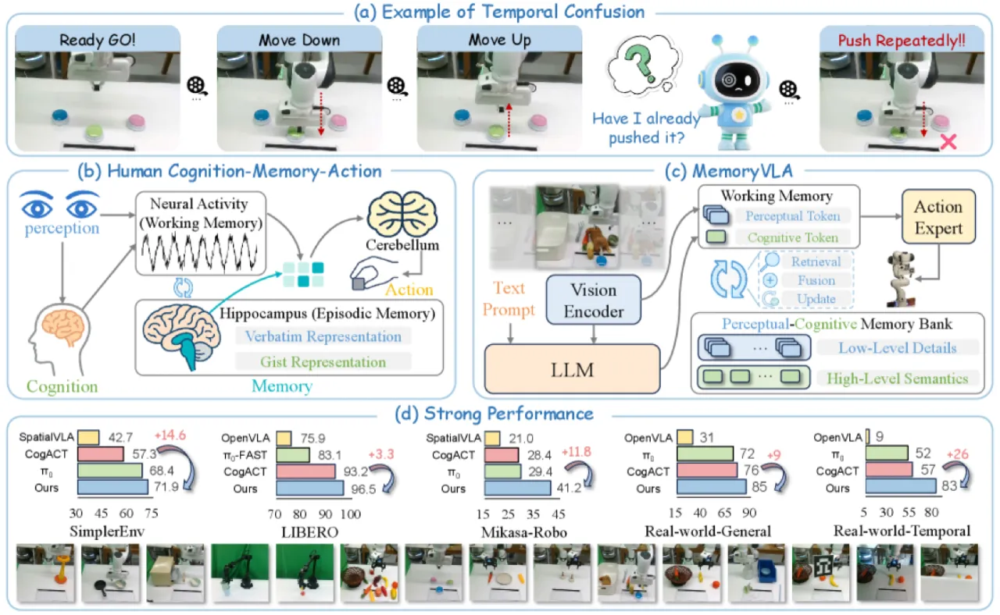
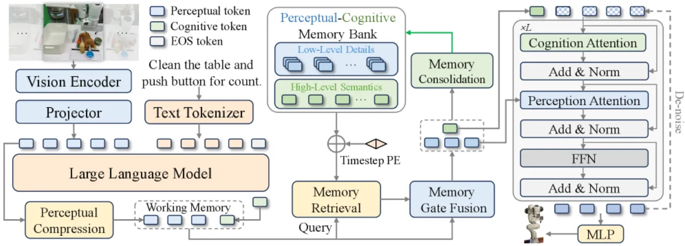
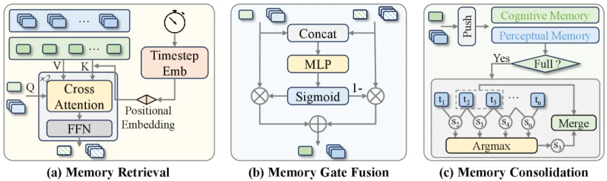
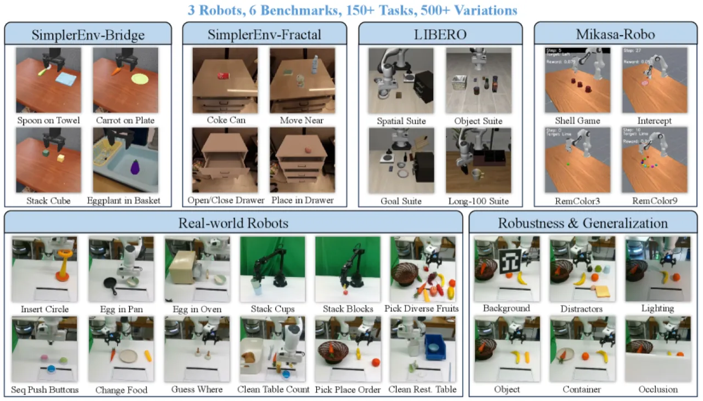
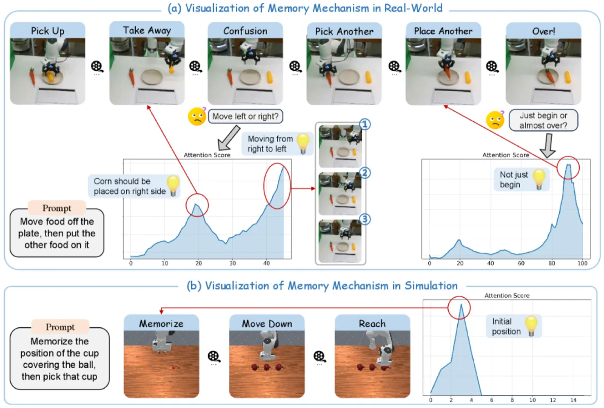

主流 VLA 模型仅依赖当前帧，无法处理需要历史信息的长时程操作任务。MemoryVLA 受认知神经科学启发，引入感知-认知双流记忆库（PCMB），通过检索、门控融合与语义合并三步机制，让机器人策略拥有"工作记忆"与"情节记忆"，在多项仿真与真实世界基准上取得显著提升。
机器人操作天然具有非马尔可夫性：早期动作决定后续状态，单帧观测往往不足以完成任务。然而，当前主流 VLA 模型均依赖当前帧，忽略了时序依赖，在需要历史记忆的任务（如顺序按按钮、记忆颜色后取物）上表现不佳。
"Robotic manipulation is inherently non-Markovian, and earlier actions influence later decisions, calling for temporal modeling."
朴素方案——直接拼接多帧——面临两大障碍：
（1）自注意力的二次复杂度严重限制了可用的时序上下文长度；
（2）多帧输入与模型在单帧机器人数据上预训练的分布不匹配。

MemoryVLA 构建了一套"认知-记忆-动作"（Cognition-Memory-Action）流水线：7B 预训练 VLM 提取当前帧的感知与认知表征，PCMB 从历史中检索并融合相关记忆，扩散 Transformer（DiT）基于富含历史信息的表征预测未来 16 步动作序列。

系统采用基于 Open-X Embodiment 数据预训练的 7B Prismatic VLM。视觉编码器并联 DINOv2 和 SigLIP backbone，对当前第三视角 RGB 图像编码。感知压缩模块（SE-bottleneck）将视觉 token 压缩为紧凑的感知 token p ∈ ℝNp×dp（Np=256）。原始视觉 token 投影至语言嵌入空间后与分词后的指令拼接，送入 LLaMA-7B，"output at the end-of-sentence (EOS) position is taken as the cognitive token c ∈ ℝ1×dc"，用于捕捉高层语义。

PCMB 维护两条并行流：感知流存储低级视觉细节，认知流存储高级语义，每条最多保留 L 个条目。
动作专家采用基于 DDIM 的扩散 Transformer（DiT），推理时执行 10 步去噪，生成未来 T=16 步的动作序列 {a₁, …, a₁₆}。在每个去噪步骤中，含噪动作 token 注入去噪时步的 sinusoidal 编码，并与富含记忆的认知表征拼接，实现历史条件下的精确动作预测。
实验涵盖 4 个仿真基准（SimplerEnv-Bridge、SimplerEnv-Fractal、LIBERO、Mikasa-Robo）和 2 套真实机器人任务（Franka + WidowX，共 12 项），对比 CogACT、π₀、OpenVLA、Octo、TraceVLA、RoboVLMs 等多个强 baseline。

| Benchmark | CogACT（prev. best） | MemoryVLA（ours） | Δ |
|---|---|---|---|
| SimplerEnv-Bridge（avg） | 57.3% | 71.9% | +14.6 pts |
| SimplerEnv-Fractal（avg） | 68.1% | 72.7% | +4.6 pts |
| LIBERO（avg 5 suites） | 93.2% | 96.5% | +3.3 pts |
| Mikasa-Robo（avg） | — | 41.2% | 大幅优于所有 baseline |
| Real-World 通用任务（avg 6 tasks） | 76% | 85% | +9 pts |
| Real-World 长时程任务（avg 6 tasks） | 57% | 83% | +26 pts |
长时程任务中单任务最大提升：Seq. Push Buttons +43 pts over CogACT；Change Food +38 pts；Guess Where +32 pts。

以 SimplerEnv-Bridge 成功率为指标（括号内为与完整模型 71.9% 的对比）：
延迟 0.194 s（较 baseline 增加 +3.6%）；吞吐 82.5 Hz；GPU 显存 16.6 GB（+0.8 GB）。计算开销极小，对实时部署友好。
真实世界 OOD 评测（Pick Place Order + Clean Restaurant Table）中，在未见背景（92–100%）、干扰物（86–92%）、光照（94–96%）、未见物体/容器（89–100%）、遮挡（94–96%）等条件下均保持高成功率。
作者指出两个未来方向："(i) developing memory reflection, aligning long-term memory to the LLM input space to enable embedding-space chain-of-thought reasoning; and (ii) building lifelong memory through biologically inspired consolidation that distills frequently reused experiences into permanent representations."——当前 PCMB 仅在单次 episode 内维护记忆，无法跨 episode 积累经验。
消融实验表明，在"未见相机视角"条件下仿真性能明显下降，说明感知 token 对视角变化仍较敏感，模型的视角不变性有待提升。
PCMB 的语义合并策略以余弦相似度为准则，在场景变化极快或存在多个相似状态时可能合并不当；10 步 DDIM 去噪虽已较快（0.194 s），对毫秒级反应要求的任务仍有压力。